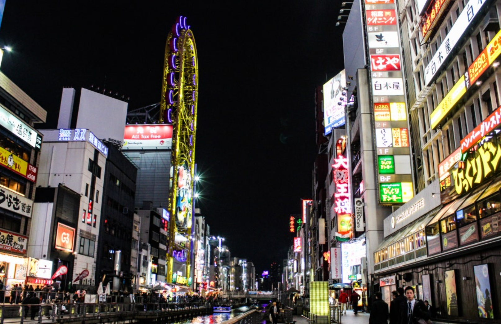

혼자 떠나는 여행, 그리고 기록
홈
여행후기
여행 팁
사진첩
문의
✏글쓰기
오사카에서의 하루
작성일: 2025-2-28

아침 일찍 도착한 도톤보리 걸으면서 먹은 타코야키, 그리고 오사카의 웅장함
생각보다 조용하고 정감 있는 도시였다. 하지만 경복궁이 더 예쁜듯^^
우유니 사막
작성일: 2024-8-17
끝없이 펼쳐진 하얀 소금 평원, 그리고 하늘과 땅이 맞닿은 거울 같은 풍경.
레전드로 예쁘다.
✈다녀온 나라
일본
이탈리아
영국
미국
체코
📌여행 꿀팁
혼자 여행 시 꼭 챙길 것들
해외 유심보다 eSIM이 더 좋은 이유